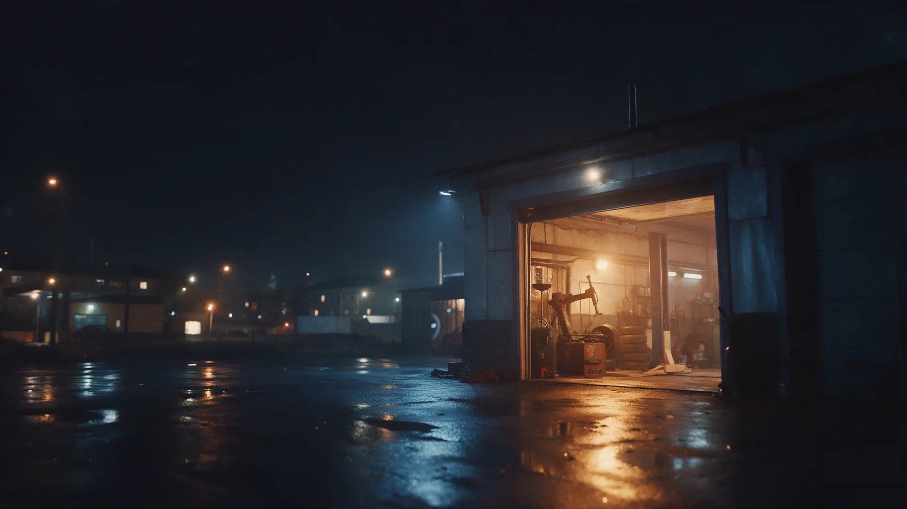
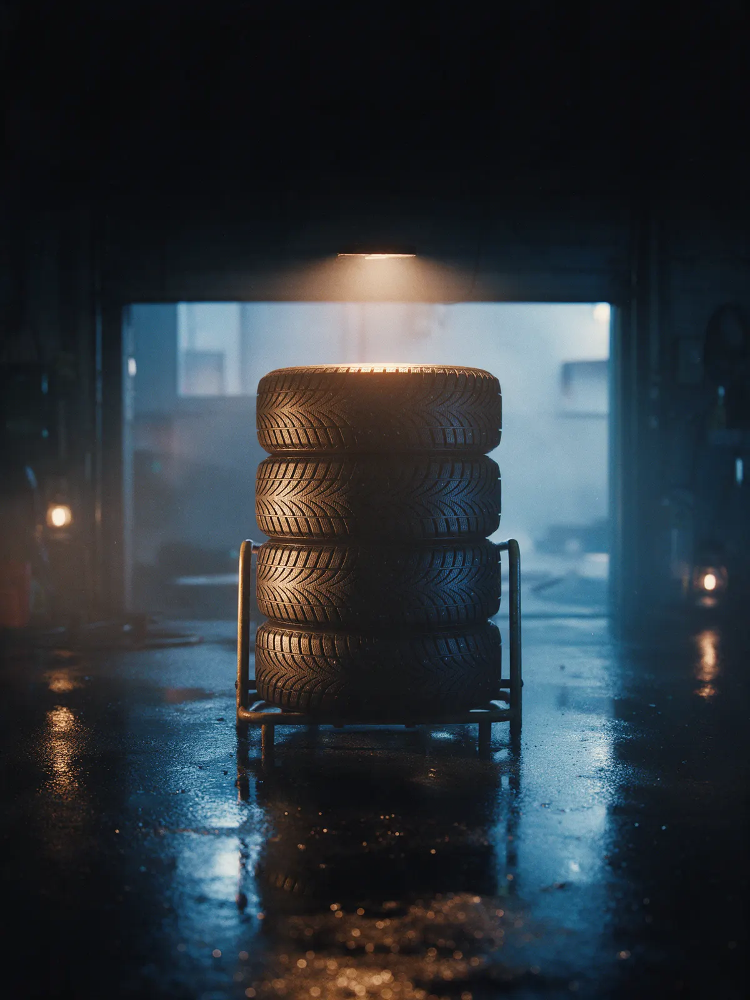
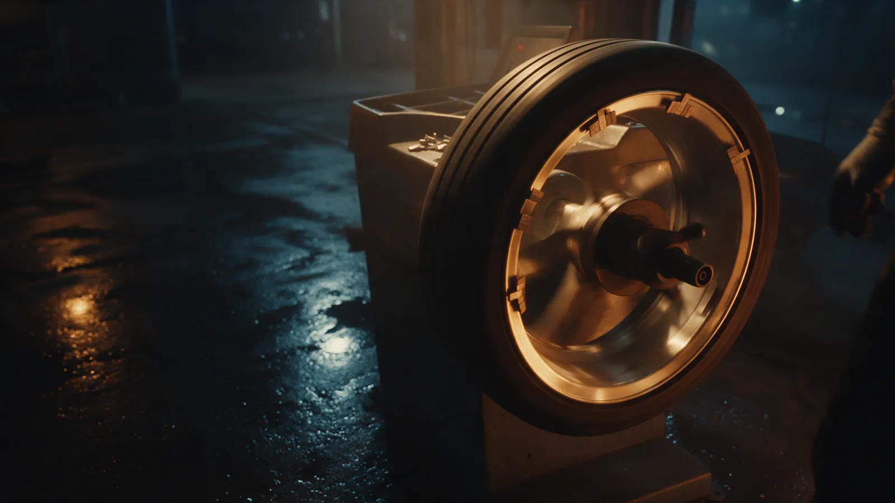
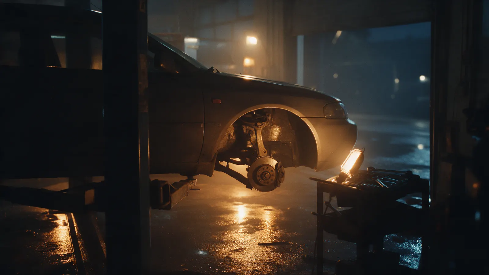

Шиномонтаж и ремонт · Кандалакша
Шиномонтаж и ремонт авто в Кандалакше – даже если вы проездом
Переобуем, сделаем развал-схождение, найдём поломку и подберём запчасти. Запишитесь на время или просто позвоните: по отзывам, принимаем и тех, кому негде встать.
- Шиномонтаж, развал-схождение, антикор
- Магазин автозапчастей при сервисе
- Пн–Пт 09:00–18:00, 3-я Линия, 97, парковка и Wi-Fi

Что входит в визит
Входит
- Осмотр машины и честный разговор, что нужно
- Названная цена до начала работ
- Запчасти можно взять тут же, в магазине при сервисе
- Парковка и Wi-Fi, пока ждёте
Отдельно, если нужно
- Запчасти и материалы – по вашему выбору
- Нетиповые работы – оценка после осмотра
- Работы, на которые вы не согласились
Цены на основные работы
Эти цены указаны на карточке сервиса. По остальным позициям назовём сумму по телефону или при записи, до начала работ.
Колёса и подвеска
- Шиномонтаж (переобувка)снять, поставить, отбалансироватьуточнить
- Развал-схождениерегулировка углов установки колёс1 800 ₽
- Диагностика подвескинайдём стуки и люфтыуточнить
Двигатель и тормоза
- Фрезеровка, притирка плоскости ГБЦ2 500 ₽
- Проточка тормозных дисков и маховиков1 500 ₽
- Антикоробработка кузовауточнить
Цены обновлены на карточке 16 июля. Остальное уточним с владельцем перед запуском.
Четыре шага, и на каждом – ваше «да»
- 01
Записались на время
Выбираете услугу и удобное время в кнопке ниже или звоните.
- 02
Смотрим машину
Находим неисправность и объясняем, что нужно делать, а что подождёт.
- 03
Делаем то, о чём договорились
Всплыло что-то ещё – сначала спрашиваем вас.
- 04
Отдаём машину
Оплата картой или наличными, и вы едете дальше.



Как с нами работают
Принимаем и тех, кому негде встать
Клиент писал, что сломался на трассе, ему дали бокс в аренду и помогли с запчастями.
Находим причину
Один из клиентов после диагностики подвески заменил всё по списку и больше не слышит стуков.
Широкий спектр услуг
Шиномонтаж, развал-схождение, антикор, проточка дисков, ремонт ГБЦ – не придётся ездить по разным местам.
Удобно по записи
Приезжаете к своему времени, без ожидания в очереди.
Отзывы с Яндекс.Карт
«Спасибо, директору и работникам! Поломался на трассе , ехать ещё до Ростова на Дону, приняли , дали бокс в аренду, поставили наставника помогать. Помогли также с запчастями.»
Роман Роман · 9 августа 2025
«Диагностировали полностью подвеску. Нашли неисправности. Все поменял по списку неисправностей и вуаля, не стуков, не дребезгов. Полностью рекомендую это СТО»
Александр · 16 мая 2024
«Очень хорошее СТО.Обслуживаем авто в этой организации не первый раз.Широкий спектр услуг.Практически все делают.Удобно расположен.По записи .Хорошие спецы.Рекомендую.»
Татьяна Бубка · 25 октября 2023
Отзывы с карточки на Яндекс.Картах, без правок.
Частые вопросы
Нужна ли запись?
Лучше записаться на время: так не придётся ждать. Если у вас поломка в дороге, позвоните, посмотрим, что можно сделать.
Какие работы делаете?
Шиномонтаж, развал-схождение, антикор, диагностику и ремонт подвески, фрезеровку ГБЦ, проточку тормозных дисков и маховиков.
Можно купить запчасти у вас?
Да, при сервисе есть магазин автозапчастей.
Когда работаете?
С понедельника по пятницу, с 09:00 до 18:00. В субботу и воскресенье выходной.
Чем можно оплатить?
Картой. Есть парковка и Wi-Fi.
Запишитесь на удобное время
- Адрес
- 3-я Линия, 97, Кандалакша
- Часы
- Пн–Пт 09:00–18:00, Сб–Вс выходной
- Телефон
- +7 (921) 281-76-66